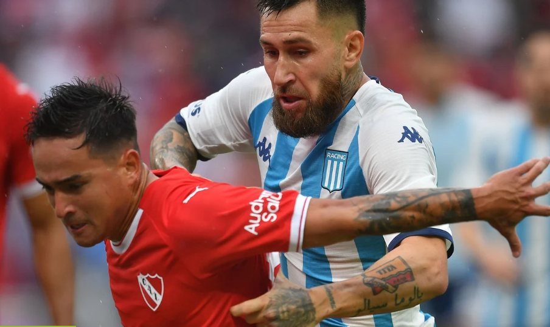
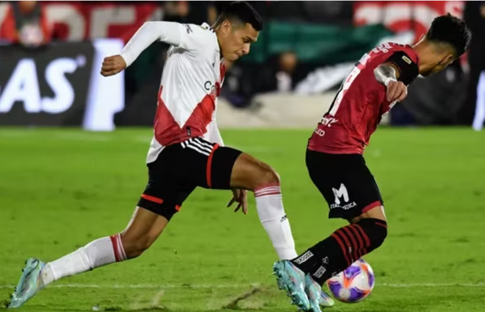
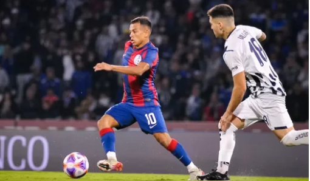
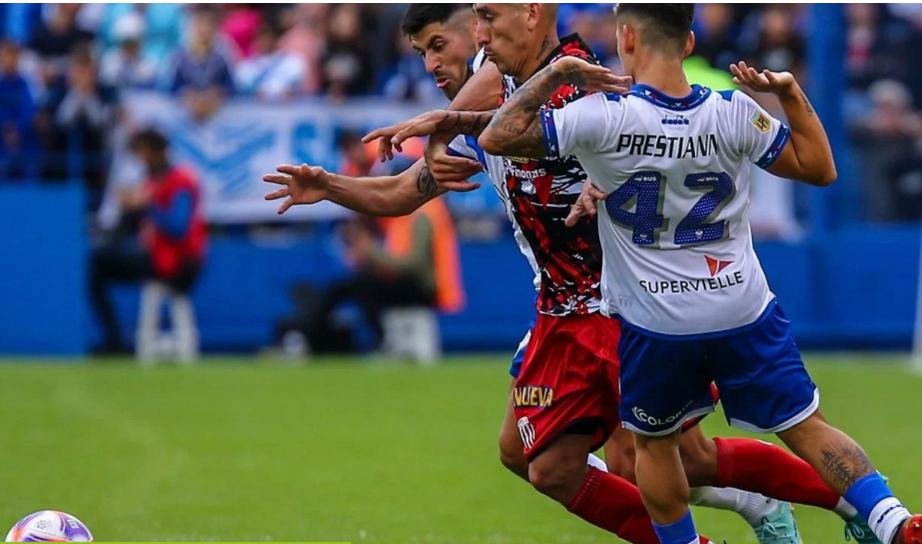
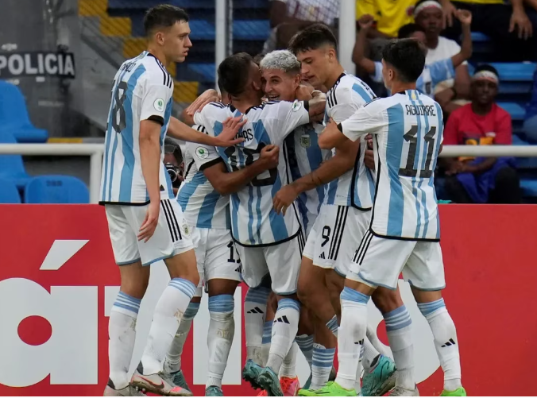
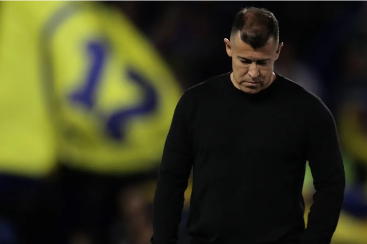

Empate entre Independiente |
Triunfo agónico del |
El Ciclón igualó sin |
|  |  |  |
En un clásico de Avellaneda |
En la fecha 12 de la Liga |
San Lorenzo empató con Talleres |
Velez no pudo con Barracas |
Argentina sede del Mundial |
Almirón tras la derrota |
|  |  |  |
El Fortín jugó incómodo con el |
La competición volverá a |
El entrenador del Xeneize |